Estructura profesional
Propósito, audiencia, secuencia y mensaje central.
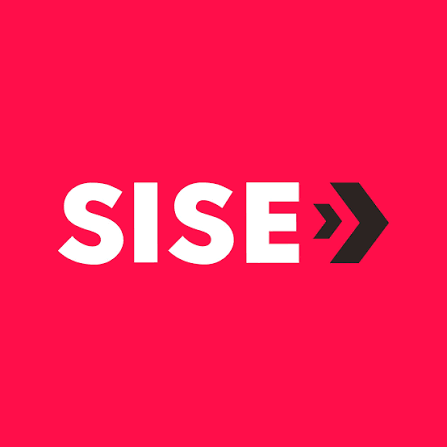
PAULA INTERACTIVA · POWERPOINT CON IA
Aprende a diseñar presentaciones impactantes con Copilot, storytelling, diseño visual y uso ético de IA, dentro de una experiencia moderna, profesional y totalmente interactiva.
“Aprende, diseña, comunica e impacta con una presentación que cuente una historia.”
MICROCURSO INTERACTIVO
Aprende a estructurar, mejorar y revisar una presentación profesional en PowerPoint 365 usando Copilot con criterio humano.
Completa teoría, tips, los 3 juegos y el cuestionario para desbloquear tu diploma.
Propósito, audiencia, secuencia y mensaje central.
Prompts, síntesis, títulos y alternativas de contenido.
Inicio, desarrollo y cierre con conexión narrativa.
Veracidad, revisión humana y protección de información.
MÓDULO 1
Domina los criterios que convierten un boceto en una presentación profesional.
Antes de abrir PowerPoint, define qué quieres lograr, quién verá tu presentación y cuál es la idea principal que debe recordar.
Copilot puede ayudar a proponer una estructura inicial, mejorar títulos, sintetizar ideas y generar alternativas de contenido.
Crea una estructura de 6 diapositivas para presentar mi perfil profesional a reclutadores. Usa un tono claro, breve y orientado a logros.Organiza el contenido como una historia: una apertura que capta atención, un desarrollo que demuestra valor y un cierre que deja una idea o acción concreta.
Prioriza jerarquía visual, legibilidad, consistencia y equilibrio entre texto e imagen. Cada diapositiva debe comunicar una idea principal.
No copies automáticamente una respuesta generada por IA. Comprueba la veracidad, protege información sensible, revisa el contexto y conserva solo lo pertinente.
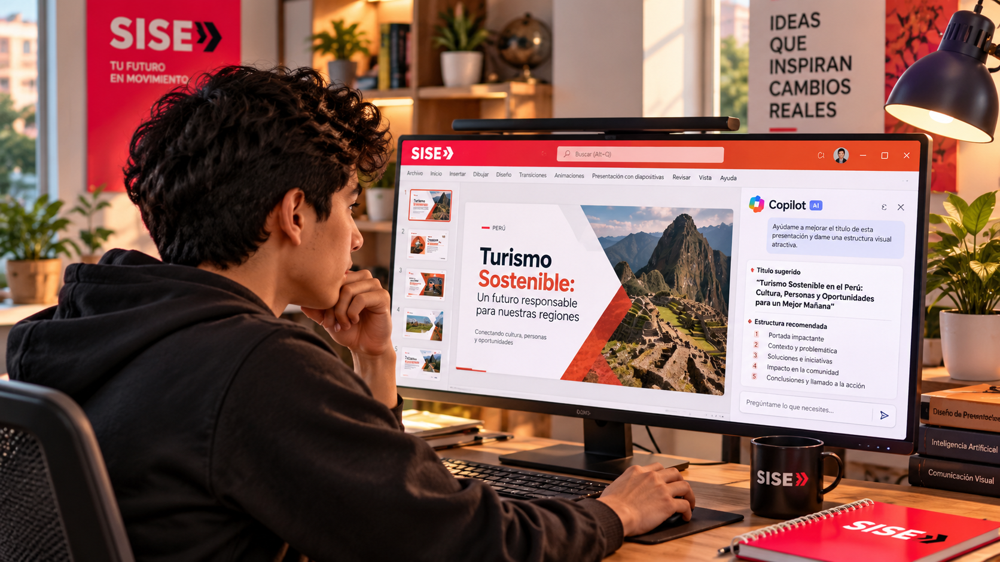
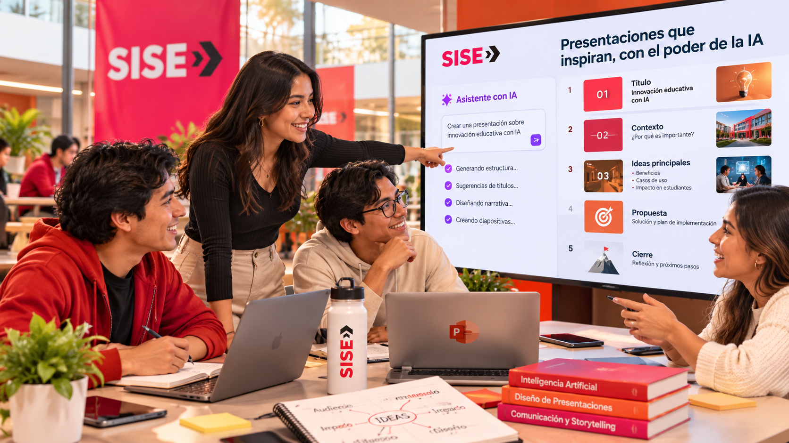
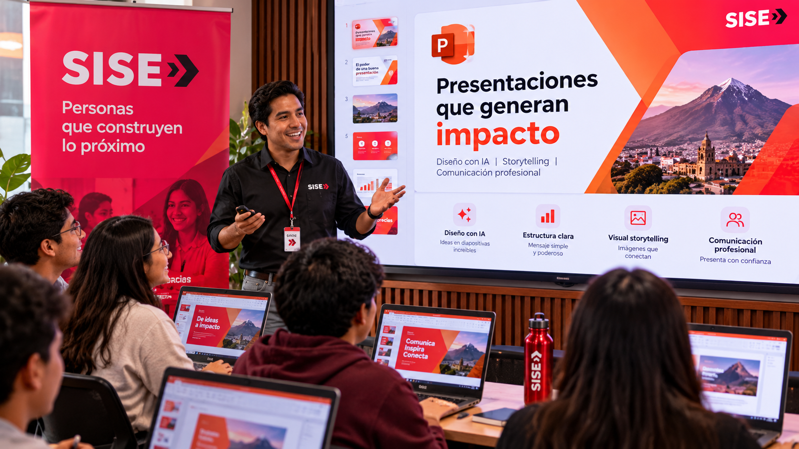
MÓDULO 2
Pequeñas acciones que mejoran velocidad, orden y seguridad al presentar.
Divide información compleja. La diapositiva apoya tu discurso; no debe reemplazarlo.
Indica audiencia, objetivo, número de diapositivas, tono y límites para obtener mejores propuestas de Copilot.
Contrasta datos, nombres, cifras y afirmaciones. La responsabilidad final del contenido sigue siendo humana.
Mantén tipografías, márgenes, alineación, estilo gráfico y paleta coherentes a lo largo del deck.
RECURSOS
Recursos incrustados para observar PowerPoint y Copilot en acción.
Demostración oficial de Microsoft 365 sobre creación, síntesis y edición asistida.
Visión general de cómo Copilot se integra con las aplicaciones de Microsoft 365.
EXPERIENCIA VISUAL
10 escenas creadas para reforzar la identidad visual de la sesión: estudiantes, colaboración, presentación, storytelling, Copilot y comunicación profesional.
Las imágenes se integran como apoyo visual para contextualizar los contenidos y hacer la navegación más atractiva. Pulsa cualquier imagen para verla a pantalla ampliada.
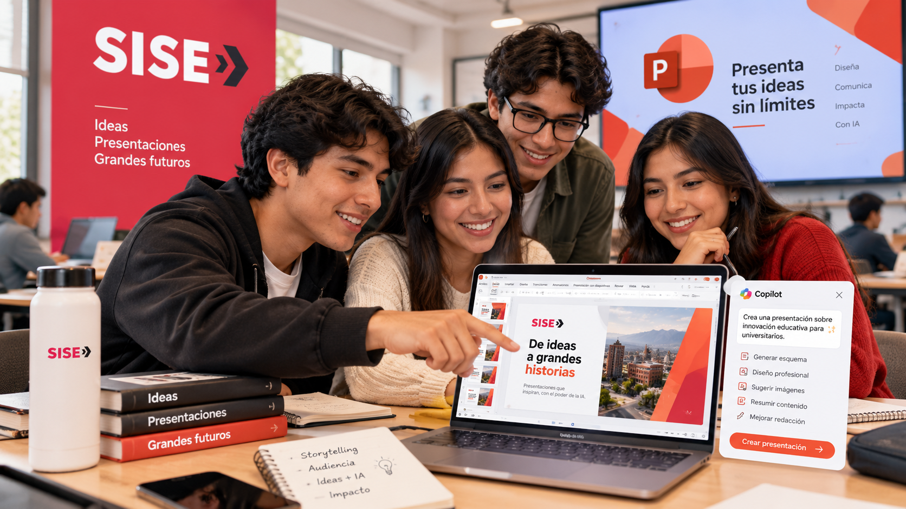
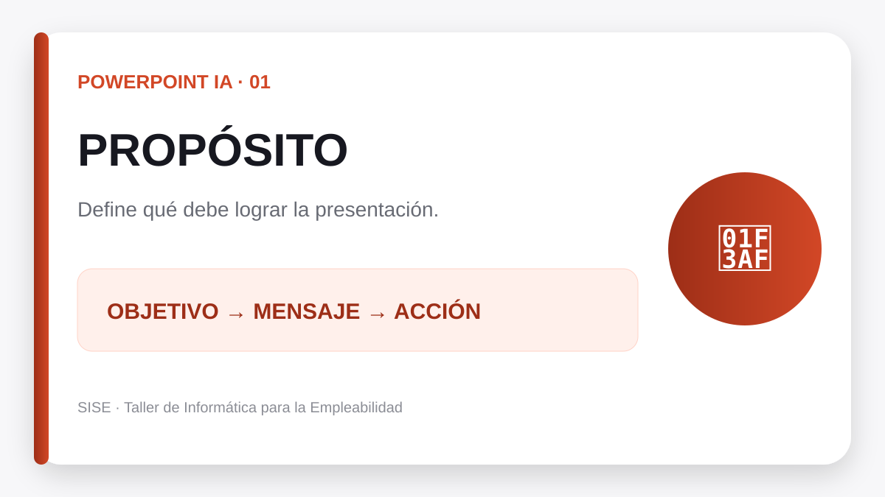
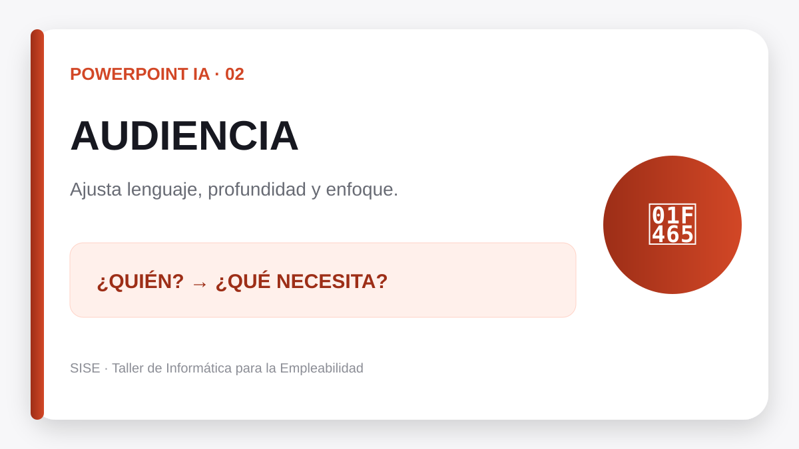
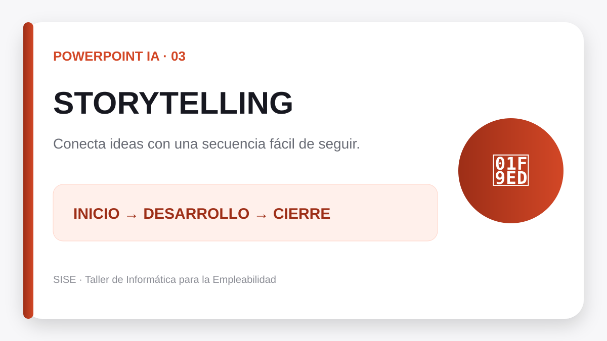
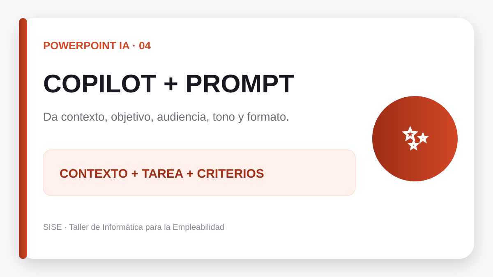
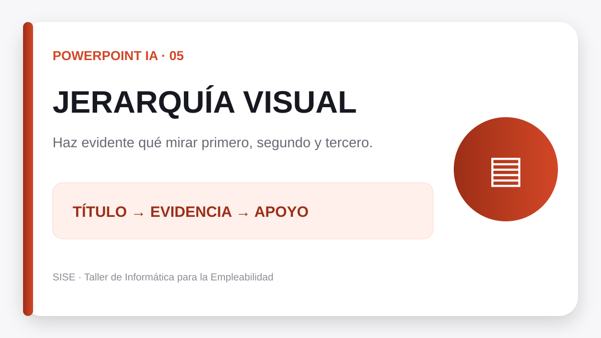
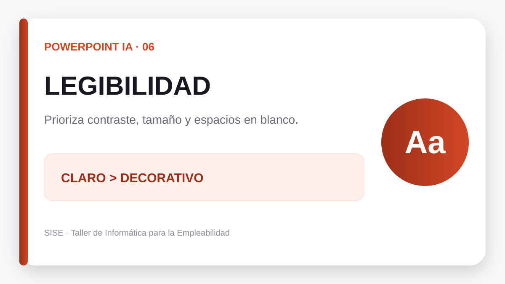
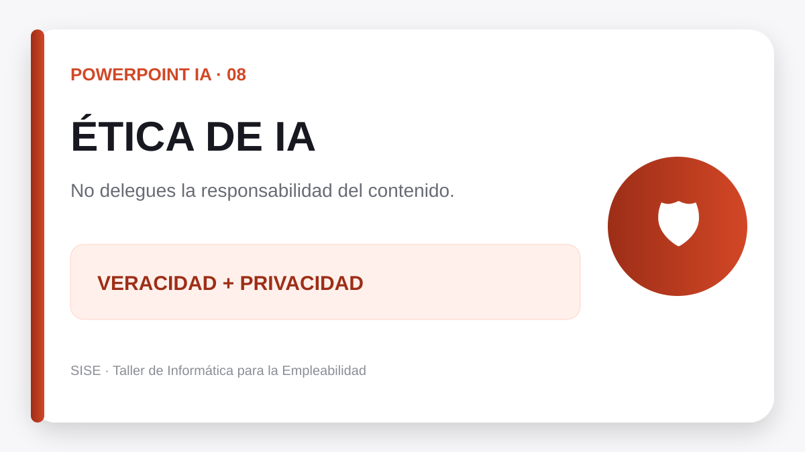
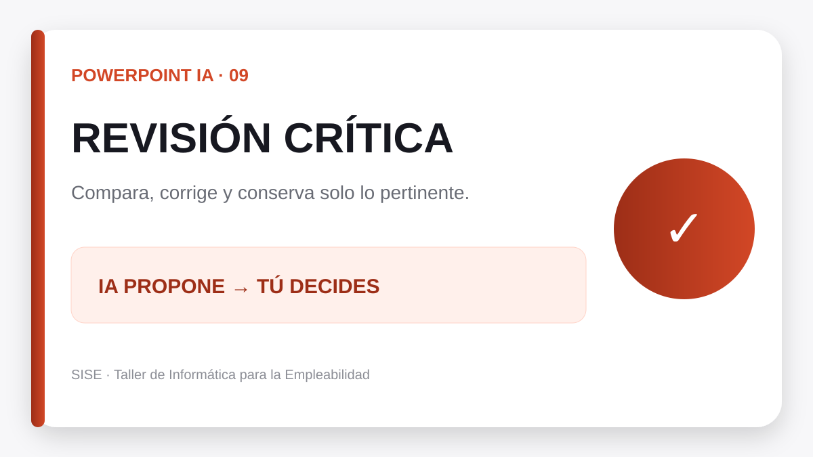
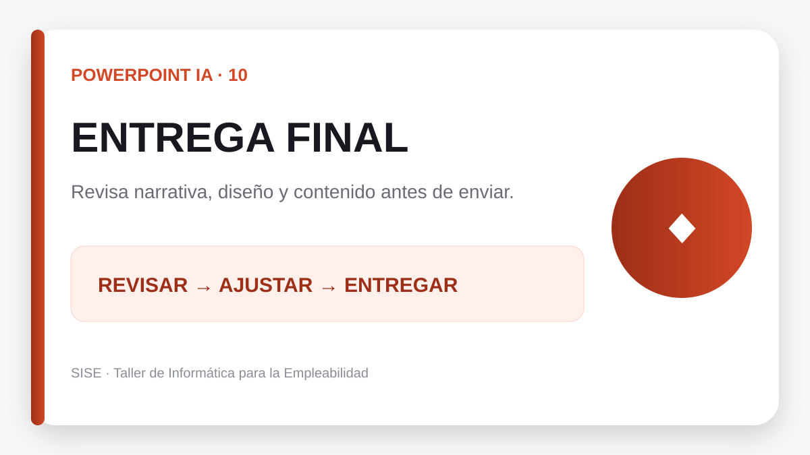
MÓDULO 3
Completa los tres juegos. La validación es inmediata y tu progreso se guarda.
Escribe la respuesta de cada pista. Al acertar, las letras se revelan en el tablero.
Encuentra las 6 parejas relacionadas con la sesión.
Haz clic en la primera y luego en la última letra de una palabra. Hay exactamente 10 palabras clave.
MÓDULO 4
10 preguntas sobre Copilot, storytelling, diseño profesional y uso ético de IA.
META FINAL
Se desbloquea cuando completas teoría, tips, los tres juegos y el cuestionario.
Aún tienes actividades pendientes.